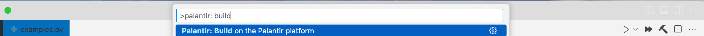
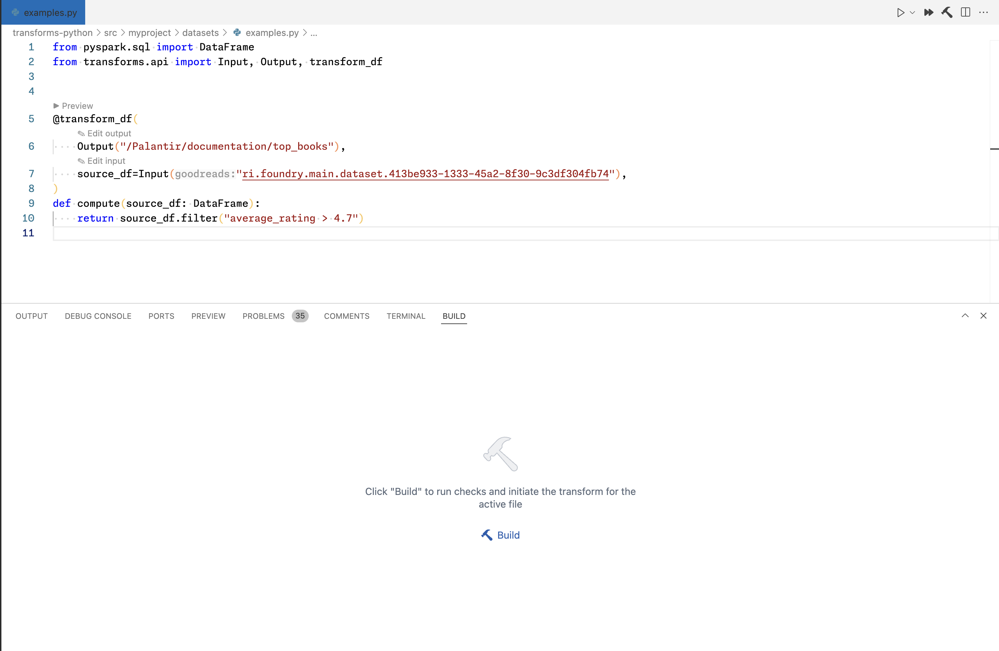
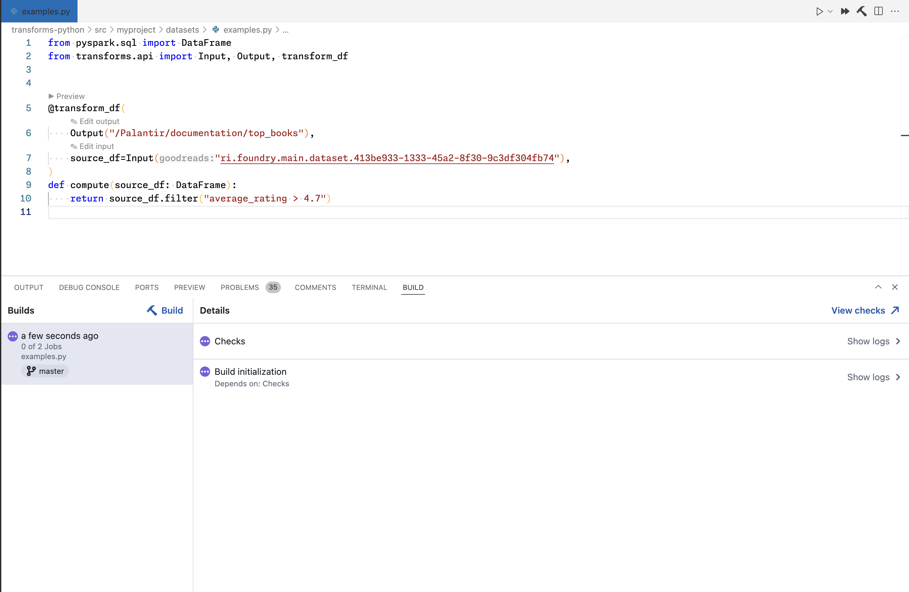

The Palantir extension for Visual Studio Code lets you build directly from your editor. After previewing and debugging your transforms, building is the final step before running your code on the full production dataset. Builds execute on the Palantir platform, and you can monitor their progress, view logs, and manage them without leaving your VS Code environment.
You can start a build within your local VS Code environment or an in-platform VS Code workspace in three ways:
Select the Palantir: Build on Foundry option from the Command Palette.

Select the Build icon from the Palantir side panel.
Open the Build panel and select the Build option.

You can initiate a build for any file from an open Palantir repository.
:::callout{theme="neutral"} To build a file, you must push all local changes back to the remote repository. :::
Once your local branch is synchronized with the remote branch, the build process will execute necessary checks and run the build on the Palantir platform with the full dataset.
Navigate to the Builds panel to view build status, access logs, and monitor your output datasets.
